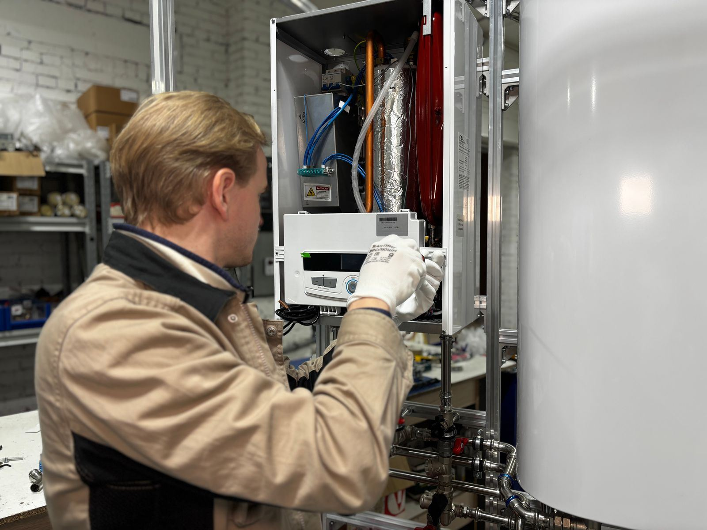

A wet floor beside the water heater is a call we hear about constantly, and the first question is always the same: where is it actually coming from? Water runs downhill and pools at the lowest point, so the puddle is often nowhere near the source. It might be the temperature and pressure relief valve or its discharge line, the drain valve near the bottom of the tank, the inlet and outlet fittings on top, condensation on a cold tank, or a nearby pipe that has nothing to do with the heater. It might also be the tank itself, and that answer changes everything. In Sacramento, CA, we trace the source before we touch a wrench.
A leak call with us starts with evidence, not guesses. The technician wipes the tank and fittings dry so fresh water shows where it starts, then checks the relief valve and its discharge line, the drain valve at the base, and every connection on top. On gas models we also inspect the burner compartment, because water there can be normal startup condensation or a sign of a tank that has failed. A relief valve that keeps releasing water triggers a pressure test: static pressure above roughly 80 psi, or a missing expansion tank on a closed system, will make even a new valve drip. Findings come first; the repair follows.
The repair depends on the diagnosis. Valve and fitting leaks are the good news: relief valves, drain valves, dielectric nipples, and flex connectors ride on our trucks, and we can often add an expansion tank or pressure-reducing valve the same day if pressure caused the problem. A leak from the tank body is the bad news, because a rusted-through tank is past saving, and we will say so rather than sell a patch. In both cases, we help limit future damage with a properly drained pan, a leak alarm or automatic shutoff, and a quick lesson on your shutoff valve. Sacramento homeowners can reach us at (279) 242-2815.
Most of our service calls are for Water Heater Repair in Sacramento and Water Heater Replacement in Sacramento. Start there if you're not sure what you need.

How to Tell Something Is Wrong
Most tanks announce trouble weeks or months ahead with rumbling noises, rusty water, or hot showers that keep getting shorter. Watch for these telltale signs that professional help is needed:
- Brown hot water along with moisture around the tank bottom
- A drain valve at the bottom of the tank that drips even when closed
- Water collecting under or beside the heater
- Mineral buildup or rust around the hot and cold connections
- Water dripping from the relief valve or out of the end of its discharge pipe
- Water stains, soft flooring, or musty smells near the heater closet
- The water meter moving when nothing in the house is running
- Water inside the burner compartment of a gas heater
Early Action Saves Money
A little rust-colored water or a relief valve that drips now and then can be the first hint of a tank that is close to the end. If you notice any of these signs, contact Sacramento Water Heater at (279) 242-2815 for a prompt inspection.
Common Questions We Hear
Why Professional Water Heater Leak Repair Matters
Most leak mistakes happen before any tool comes out. Water travels along pipes and the outer jacket before it drips, so the puddle rarely marks the source, and normal condensation on a gas unit or a cold tank can pass for a leak. Guessing leads to replacing the wrong valve or, worse, missing a tank that is about to fail. The safety side matters as well: a relief valve that is discharging is protecting the tank, and plugging it is dangerous. Old fittings can snap when forced, and wet floors near 240-volt wiring is a real shock hazard.
Experience turns a guessing game into a short, clear diagnosis. We isolate each possible source in turn, confirm it with fresh water on a dried surface, and measure static pressure so a new valve does not start dripping next week. Worn relief valves, weeping drain valves, and corroded connections are swapped the same visit, and pressure problems get a permanent fix, whether that is an expansion tank or a pressure-reducing valve. A rusted-through tank gets an honest replacement recommendation rather than a patch, and we can add a piped drain pan and a leak sensor to protect your home going forward.
From Your Call to Hot Water
We follow the same careful process on every water heater, whether it's a quick thermostat swap or a full tankless conversion. Here's what you can expect when you choose Sacramento Water Heater:
Stop & Protect
First the water gets stopped. We confirm the supply valve is closed, the heater is off, and the area is dry enough to work safely.
Find Where It Starts
We dry the tank and fittings, then check the relief valve and discharge pipe, the drain valve, the top connections, and the burner area one at a time.
Measure What Caused It
We gauge household water pressure and look at expansion control, because a closed system without room to expand spikes pressure every heating cycle.
Repair, Refill & Verify
We replace the failed part, refill and purge the tank, restart the heater, and confirm every joint stays dry. A leaking tank gets an honest replacement recommendation instead.
Repair or Replace? Let's Figure It Out.
Tell us the age, fuel type, and symptoms, and we'll help you sort out the next step.
Tap to Call (279) 242-2815Simple Ways to Extend Your Water Heater's Life
A little routine care goes a long way toward keeping a water heater running well past its expected lifespan. Put these technician-approved steps to work at home:
- An expansion tank that is present and properly charged keeps the relief valve from opening every cycle
- Place the heater in a drain pan with a line to a floor drain or outdoors, especially above finished space
- Draining sediment every year helps the bottom of the tank last longer
- Glance at the heater monthly for damp spots, rust, or crust on the fittings
- Put a water leak sensor on the floor next to the tank so a drip gets noticed early
- Replace a depleted anode rod before the steel tank becomes the next target for corrosion
- High street pressure is hard on water heaters, so a pressure test and regulator can prevent repeat drips
Doing It Yourself vs. Hiring a Technician
A few tasks, like checking the temperature setting or lifting the relief valve lever to test it, are fine for homeowners, but most water heater work involves gas lines, venting, 240-volt circuits, or a tank full of scalding water, and that belongs with a professional. Here's how the two approaches stack up:
| Consideration | DIY Attempt | Hiring a Pro |
|---|---|---|
| Finding the Source | Guess based on where water collects | Surfaces dried and each source confirmed |
| T&P Valve | Valve swapped without checking why | Pressure and expansion tested, valve replaced properly |
| Old Fittings | Tightened until the fitting cracks | Corroded connections replaced with new fittings |
| False Alarms | Normal sweating treated as a leak | Condensation identified before money is spent |
| Protecting the Home | Damage prevention skipped | Shutoff labeled and leak alarms suggested |
| Result | Source unconfirmed | Confirmed dry repair or honest replacement advice |
Talk to Our Water Heater Leak Repair Team
Don't let a failing water heater get worse. Call Sacramento Water Heater now for prompt, professional service.
Get Help: (279) 242-2815Where We Provide Water Heater Leak Repair
We bring water heater leak repair to homes and businesses in town and across the nearby communities. Pick your area to see local details.